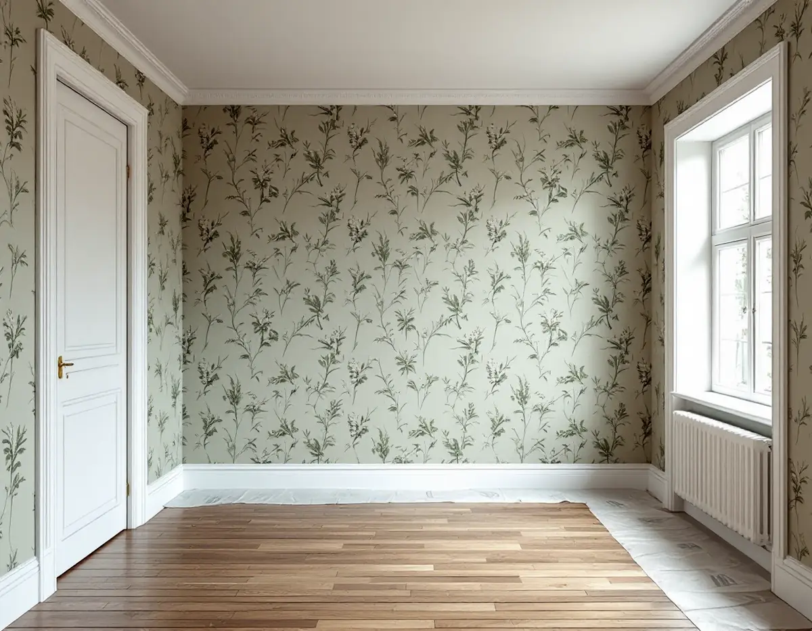
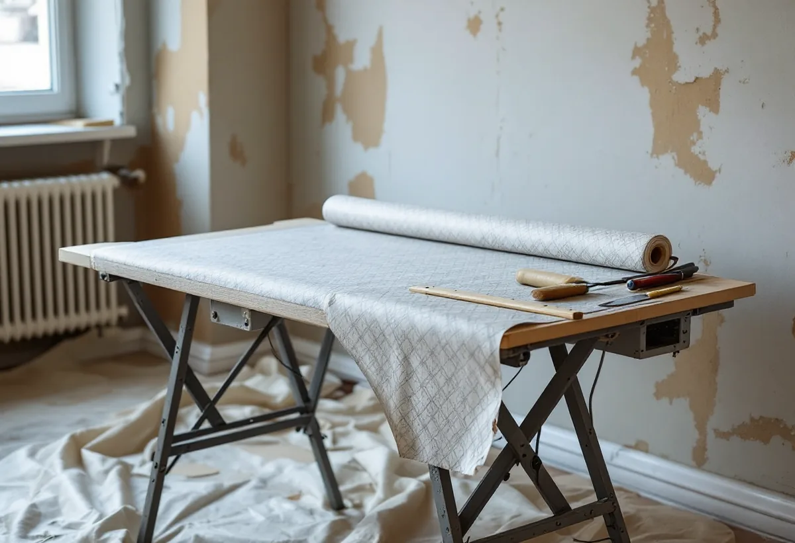
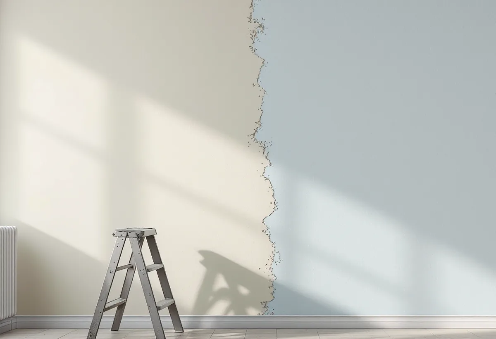

Platsbesök
Vi lyfter en kant, ser vad som sitter på väggen och mäter rummen. Besöket är gratis.

Geal Entreprenad AB tapetserar i lägenheter, radhus och villor i hela Stockholm: vi tar ned gamla tapeter, lagar och förlimmar väggen och sätter upp den nya tapeten med mönstret passat.
Beskriv jobbet kort.
Något blev fel. Kontrollera uppgifterna eller ring 08 12 410 276.
Vi tittar på jobbet på plats innan du får offert.
Du ser vad som ingår och vad det kostar.
Vi drar av ROT direkt och sköter ansökan.
Geal Entreprenad AB, Bromma. Org.nr 559303-7566.

Du får ett gratis platsbesök och ett skriftligt kostnadsförslag, och ROT-avdraget dras direkt på fakturan. Här ser du vad som ingår, hur arbetet går till, vad priset beror på och vad väggen kräver innan första våden kommer upp.
En tapet blir inte bättre än väggen under. Därför börjar arbetet med att golv, lister och möbler skyddas och att den gamla tapeten tas ned eller, när den sitter fast och är slät, behålls som underlag. Sedan lagas hål och sprickor, skarvar spacklas och slipas och väggen grundas eller förlimmas så att klistret får fäste.
Därefter mäts våderna ut från en lodlinje, mönstret passas i höjd och våderna sätts kant i kant. Vi skär rent mot tak, lister, foder och eluttag och går över skarvarna innan klistret har torkat.
Ska väggar eller tak målas i samma rum gör vi det före tapeten – mer om det finns under målare i Stockholm.

Papperstapet är den klassiska tapeten. Den klistras på baksidan, får svälla en stund och sätts sedan upp, och den kräver en jämn vägg eftersom ojämnheter syns igenom. Non-woventapet har en baksida av fiber som inte sväller. Där läggs klistret direkt på väggen, vilket gör uppsättningen snabbare och skarvarna lättare att få täta. Vinyltapet har ett ytskikt av plast som tål avtorkning.
Valet handlar inte bara om mönster. Svenska Byggnadsvårdsföreningen varnar för täta, vattenavvisande skikt i gamla hus och nämner att mögel har förekommit bakom moderna tapeter som sätts upp med klister på väggen. I ett hus som är uppvärmt året runt är det sällan ett problem, men i ett äldre hus eller ett hus som står kallt delar av året väljer vi hellre en papperstapet med stärkelseklister, som släpper igenom fukt.
Stora mönster ger mer spill, eftersom varje våd måste passas mot den förra. Det räknar vi med när antalet rullar bestäms. Rullar från en senare tillverkningsomgång kan skilja i nyans, så antalet bör stämma från början.
Hur mycket underarbete som behövs syns först när en kant lyfts. I äldre lägenheter kan flera lager tapet sitta på varandra, ibland på spänd papp. I hus från 1920- till 1950-talen är putsväggarna ofta kriderade, alltså strukna med en kritblandning som ger dålig vidhäftning om den inte tvättas bort eller binds. På gipsskivor är det spacklingarna som är känsliga, eftersom de oftast inte är förlimmade.
På en frilagd och lagad putsvägg råder Svenska Byggnadsvårdsföreningen att förlimma och klistra upp en täckpapp innan den nya tapeten. Förlimningen gör att väggen suger jämnt, och pappen ger ett slätt underlag. När en tapet släpper efter kort tid beror det enligt föreningen oftast på att underlaget inte var tillräckligt torrt eller inte förlimmat.
Vi provar därför väggen innan vi lämnar kostnadsförslaget och skriver ut vilket underarbete som ingår.
Tapet i kök fungerar bra på väggar som inte utsätts för stänk, och där väljer vi en yta som går att torka av. I badrummets våtzoner hör tapet inte hemma – där krävs tätskikt, och det beskriver vi under badrumsrenovering.
I oeldade sommarhus och äldre hus med hög fuktighet skadas papperstapeter långsamt, skriver Svenska Byggnadsvårdsföreningen, och det syns som lösa skarvar, fuktfläckar och svarta prickar. Sitter det en tät tapet eller ett tätt färgskikt på en vägg i ett hus som står kallt kan fukt samlas bakom ytan. Då tar vi ned det täta skiktet innan väggen förlimmas och väljer en tapet som passar huset.
I en bostadsrätt är tapetsering något du normalt får göra utan att fråga föreningen. Finns det äldre tapetlager eller målade tak som kan ha kulturvärde fotograferar vi dem och sparar en bit innan något tas ned.
Det som skiljer en bra tapetsering från en dålig syns i detaljerna. Första våden sätts efter en lodlinje och inte efter ett hörn eller en dörrkarm, eftersom väggar i äldre hus sällan står i lod. Vi väljer var i rummet mönstret ska börja, oftast mitt på den vägg som syns först, så att mönstret hamnar symmetriskt där ögat landar och den oundvikliga skarven där mönstret inte går ihop hamnar i ett undanskymt hörn.
I hörn delas våden så att tapeten går runt hörnet med en smal remsa, i stället för att en hel våd viks om och spricker när huset rör sig. Runt eluttag och strömbrytare skärs tapeten in under locket, och mot tak, lister och foder skärs den med vass kniv mot en bredspackel. Ojämna tak och sneda lister döljs bäst med ett litet mönster eller en enfärgad tapet, och det säger vi vid platsbesöket.
Tapet på en enda vägg, en fondvägg, följer samma arbetsgång. Där blir mötet mot de målade väggarna viktigast, och vi målar därför de andra väggarna först.
Du behöver inte tömma rummet helt. Det räcker att möblerna ställs mitt på golvet så att vi kommer åt väggarna, och att tavlor, hyllor och gardinstänger tas ned. Lösa lock till eluttag och strömbrytare skruvar vi av själva, med strömmen bruten.
Har du redan köpt tapeten är det bra om rullarna ligger framme vid platsbesöket, så att vi kan kontrollera att alla har samma tillverkningsnummer och räkna om de räcker. Vill du ha hjälp att räkna innan du beställer gör vi det på plats.
Vi lyfter en kant, ser vad som sitter på väggen och mäter rummen. Besöket är gratis.
Nedtagning, underarbete och uppsättning står var för sig, med ROT-avdraget uträknat.
Golv och lister täcks, och gamla tapeter blöts upp och tas ned där de inte kan sitta kvar.
Hål och sprickor lagas, väggen spacklas, slipas och förlimmas och får torka.
Våderna sätts från en lodlinje med mönstret passat och skärs rent mot tak och lister.
Vi går igenom rummen och skarvarna med dig när arbetet är klart.
Tiden beror på antalet rum, hur många lager som ska ned och hur mycket väggen behöver lagas. Själva uppsättningen går fortast. Det som tar tid är underarbetet, eftersom spackel och förlimning ska torka innan tapeten kommer upp – en tapet som sätts på ett fuktigt underlag riskerar att släppa.
Tidplanen står i kostnadsförslaget. Rummet går att använda när klistret har torkat.
Skatteverket räknar tapetsering som rotarbete i bostadsrätt, ägarlägenhet och småhus. I bostadsrätten ska arbetet göras inne i bostaden, innanför dess tak, väggar och golv.
Avdraget är 30 procent av arbetskostnaden, högst 50 000 kr per person och år och högst 75 000 kr tillsammans med rutavdrag. Material som tapet och klister ger inget avdrag, och inte heller resor. Eftersom underarbete och uppsättning är arbetad tid på plats hos dig ger det mesta av kostnaden underlag för rotavdraget. Geal drar avdraget direkt på fakturan och ansöker om utbetalningen hos Skatteverket, så du betalar bara din del.
Vi publicerar inga prislistor för tapetsering, eftersom underarbetet avgör mer än väggytan. Det som väger tyngst är hur många lager som ska ned, hur mycket väggen behöver lagas och spacklas, takhöjden, antalet fönster, dörrar och hörn att skära runt och hur krävande mönstret är att passa. Tapeten väljer och köper du själv eller genom oss, och den redovisas som material.
Efter platsbesöket får du ett skriftligt kostnadsförslag där arbete och material står var för sig och ROT-avdraget är uträknat. Besöket och kostnadsförslaget är gratis.
Tak, väggar och snickerier.
Målare i Stockholm →Lister, foder och dörrar.
Snickare i Stockholm →Slipa golvet innan tapeten sätts upp.
Golvslipning i Stockholm →Ytskikten som del av en större renovering.
Villarenovering →Eller ring 08 12 410 276, mån–fre 08–17.
Beskriv jobbet kort.
Något blev fel. Kontrollera uppgifterna eller ring 08 12 410 276.